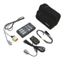

http://2a2.ru/
| тел. +7 927 800 76 16 http://2a2.ru/ |
|---|
ДИАГНОСТИЧЕСКИЙ СКАНЕР-ТЕСТЕР СТМ-5 СТМ-5 диагностирует электронные системы управления двигателем автомобилей ВАЗ, ГАЗ и УАЗ с блоками МИКАС-7.1, МИКАС-7.2, МИКАС-10, МИКАС-11, АВТРОН, СоАТЭ-АВТРОН, ЭЛАРА-7, VDO (ГАЗ-560 с дизелем STEYR (Штайер)), BOSCH M1.5.4, BOSCH M1.5.4N, ЯНВАРЬ-5 (и его модификации), BOSCH MP7.0H (euro-2), BOSCH MP7.0H (euro-3), BOSCH M7.9.7 (euro-2), BOSCH M7.9.7 (euro-3), ЯНВАРЬ-7.2, ЯНВАРЬ-4 (и его модификации), BOSCH ME17.9.7. С версии 3.0 от 30.11.06 СТМ-5 позволяет диагностировать антиблокировочную систему торможения BOSCH ABS-8.0. Основной конструктивной особенностью сканера СТМ-5 является наличие ЖК-индикатора с подсветкой на 2х16 символов, корпус из бензомаслоустойчивой пластмассы (АБС) и пленочная пультовая панель на 6 клавиш. Габаритные размеры (без кабеля) 178х88х28 мм . В СТМ-5 программы диагностирования всех блоков управления прошиты в тестере, и выбор конкретного блока управления производится после включения тестера из экранного меню. В СТМ-5 предусмотрено автоматическое распознавание ЭСУД. Выбор режимов и подрежимов работы СТМ-5 осуществляется перемещением по экранному меню нажатием клавиш «Up», «Down», вход в режим и выход из него—нажатием клавиш «Entr», «Esc».
Все параметры разбиты на строго фиксированные группы, состоящие из 5—15 параметров, СТМ-5 позволяет зафиксировать срез значений параметров (запрет обновления значений) в пределах группы и просмотреть значения параметров, зафиксированные в конкретный момент времени. При отображении параметров СТМ-5 может индицировать либо один параметр с его кратким описанием, либо два параметра без краткого описания: например: Перемещение на последующие параметры в пределах данной группы осуществляется нажатием клавиш «Up», «Down». В режиме отображения неисправностей на экран СТМ-5 выводится, например, следующая информация: 
Во второй строке экрана попеременно отображаются две строки описания ошибки, перед номером которой стоит знак >. Знак > перемещается клавишами «Up», «Down».
В базовый комплект СТМ-5 входят: прибор СТМ-5, кабель диагностический ГАЗ-1 (euro-0/2), кабель диагностический ВАЗ-1 (euro-0/2), кабель диагностический ВАЗ-2 (euro-3/4), руководство по эксплуатации, паспорт, рабочая сумка. Дополнительно к базовому комплекту можно заказать кабель диагностический ГАЗ-2(VDO/ШТАЙЕР) и перемычку АПС. Руководство по эксплуатации и паспорт на прибор СТМ-5 в формате *.pdf можно взять здесь. На странице price.html приведены цены на продукцию ООО «А2». Заказ прибора СТМ-5 |
•главная •где купить •цены •продукция •документация •программы •коды ГАЗ •ЭСУД ГАЗ •ЭСУД PATRIOT •ЭСУД ВАЗ •ЭСУД STEYR •автосервисы •сайты e-mail: •a2@2a2.ru |